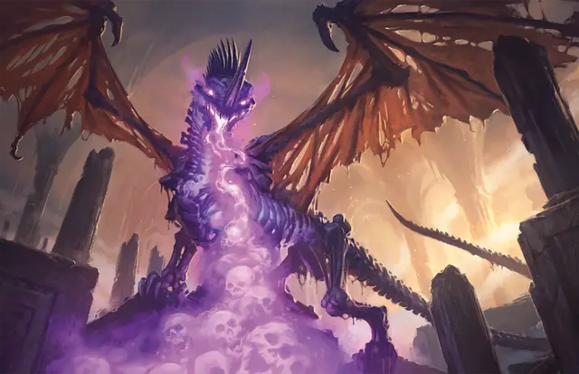

Драколич
Dracolich
Огромная или Громадная Нежить, Принципиальная Злая

Класс Защиты 20 Инициатива +12 (22)
Хиты 225 (18к12 + 108)
Скорость 40 футов, Полёта 80 футов, Копания 30 футов
| мод | спас | ||
|---|---|---|---|
| СИЛ | 25 | +7 | +7 |
| ЛОВ | 10 | +0 | +6 |
| ТЕЛ | 23 | +6 | +6 |
| мод | спас | ||
|---|---|---|---|
| ИНТ | 19 | +4 | +4 |
| МДР | 15 | +2 | +8 |
| ХАР | 21 | +5 | +5 |
Иммунитеты Некротический, Яд; Испуганный, Истощение, Отравленный, Очарованный, Парализованный
Чувства Тёмное зрение 120 футов, пассивное Восприятие 24, Слепое зрение 60 футов
Языки Общий, Драконий
Опасность 17 (18 000 опыта или 20 000 опыта в Логове; БВ +6)
Особенности
Легендарное сопротивление (3/день, или 4/день в Логове). Если драколич проваливает спасбросок, он вместо этого может в нём преуспеть.
Подавление жизни. Существа в пределах 60 футов от драколича не могут восстанавливать Хиты.
Сопротивление магии. Драколич совершает с Преимуществом спасброски от заклинаний и прочих магических эффектов.
Камень души. У драколича есть магический самоцвет. Если в момент уничтожения драколича самоцвет находится на том же плане бытия, то спустя 1к20 дней драколич обретает новое тело и появляется в пределах 5 футов от камня со всеми Хитами.
Камень — это Крошечный предмет с КЗ 20, 50 Хитами и Иммунитетом к Некротическому, Психическому урону и урону Ядом. Камень восстанавливает все свои Хиты в конце каждого хода, но рассыпается в пыль, если его Хиты опускаются до 0. Если камень будет уничтожен, драколич может создать новый, совершив 8-часовой ритуал, требующий самоцвет стоимостью не менее 1000 ЗМ и затрачивающий 5 000 ЗМ на иные материалы.
Действия
Мультиатака. Драколич совершает три атаки Раздиранием. Он может заменить одну из этих атак использованием Сотворения заклинаний (Луч болезни, версия 2-го уровня).
Раздирание. Бросок рукопашной атаки: +13, досягаемость 10 фт. Попадание: 18 (2к10 + 7) Рубящего урона плюс 4 (1к8) Некротического урона.
Некротическое дыхание (Перезарядка 5–6). Спасбросок Телосложения: Сл 20, каждое существо в 60-футовом Конусе. Провал: 52 (8к12) Некротического урона. Успех: Только половина урона.
Сотворение заклинаний. Драколич сотворяет одно из следующих заклинаний, не нуждаясь в Материальных компонентах (заклинательная характеристика — Харизма, Сл спасброска заклинаний 19, +11 к попаданию атак заклинаний):
Неограниченно: Луч болезни, версия 2-го уровня, Обнаружение магии
1/день каждое: Перст смерти, Сотворение нежити, версия 8-го уровня
Легендарные действия
У этого существа есть 3 использования Легендарных действий (или 4 использования в его Логове); оно может немедленно после окончания хода другого существа потратить одно использование, чтобы совершить одно из следующих действий. Существо восполняет все потраченные использования в начале каждого своего хода.
Наскок. Драколич перемещается на расстояние вплоть до половины своей Скорости и совершает одну атаку Раздиранием.
Тошнотворный луч. Дракон использует Сотворение заклинаний (Луч болезни, версия 2-го уровня). Драколич не может совершить это действие повторно до начала своего следующего хода.
Ужасающее присутствие. Спасбросок Мудрости: Сл 19, каждое существо в 30-футовой Эманации, исходящей отдраколича. Провал: 11 (2к10) Психического урона, и цель Испугана до конца своего следующего хода Провал или успех: Драколич не может совершить это действие повторно до начала своего следующего хода.
Бонус мастерства +6
Среда обитания Любая
Сокровища Любые
Драколич
Возродившийся дракон-тиран
Когда самые гнусные из драконов стремятся избежать встречи со смертью, они ищут древние секреты и овладевают богомерзкой магией, чтобы превратиться в ужасное чудовище — драколича. Эти бессмертные связывают свои души с самоцветом, а затем магическим образом оживляют свои гниющие трупы. В конечном итоге драколичи превращаются в ужасные скелеты, которые продолжают плести многовековые интриги, начатые ещё при жизни, мстить всем, кто стал причиной их падения, и стремятся достичь новых целей, открывшихся после смерти.
Драколичи сочетают в себе порочное бессмертие нежити и легендарную силу драконов. Они всё ещё способны поразить врагов своим губительным дыханием — потоком леденящей некротической энергии. Эти пугающие существа постепенно отравляют земли вокруг своих логовищ и привлекают на службу зловещих последователей — как правило, нежить или культистов, желающих приобщиться к их устрашающей силе. Все живые драконы ненавидят и стремятся уничтожить этих мерзких порождений драконьей магии.
Для дракона существует бесчисленное число способов стать драколичем. Но после превращения он должен выбрать камень, который будет служить якорем для его души, связывающим бессмертного дракона и мир живых. Пока драколич и его камень души находятся на одном плане бытия, он способен пережить разрушение своей физической оболочки: душа возвращается в камень, и однажды чудовище сможет восстановить своё ужасающее тело. Драколичи часто прячут камни души в особенных сокровищах внутри своих кладовых или же наоборот — в ничем не примечательных безделушках. Совершите бросок по таблице «Оболочка камня души драколича» для вдохновения или выберите сами место, где хранится его величайшее сокровище.
Оболочка камня души драколича
| 1к10 | Камень души драколича спрятан в... |
| 1 | Груде сокровищ другого дракона. |
| 2 | Теле его слуги или потомка. |
| 3 | Центре его расплавленного клада. |
| 4 | Испорченном яйце дракона. |
| 5 | Трофее героя в виде рога дракона. |
| 6 | Королевской регалии или реликвии. |
| 7 | Могущественном магическом предмете. |
| 8 | Источнике магических чудес, например в гигантском дереве или таинственном пруду. |
| 9 | Хранилище архидьявола, проклятого бога или другого межпланарного злодея. |
| 10 | Оружии, способном убить его. |
Логова драколичей
Драколич скрывается в глубине проклятого логова, в котором обитал при жизни.
Местность, в которой находится логово драколича, изменяется из-за его присутствия, что создаёт следующие эффекты:
• Ослабляющий туман. Область в пределах 1 мили от логова окутывает очень бледный туман. Видимость в этой области Слабо заслонена. Каждый раз, когда существо, кроме самого драколича и его союзников, завершает Долгий отдых в этой области, оно должно совершить спасбросок Телосложения Сл 15; при провале оно получает 1 степень Истощения.
• Поглощение души. У существ в пределах 1 мили от логова Помеха на спасброски против смерти.
Если драколич умирает или перемещает своё логово в другое место, все эти эффекты мгновенно исчезают. Эти эффекты начинают действовать вновь, если он получает новое тело (см. особенность «Камень души»).